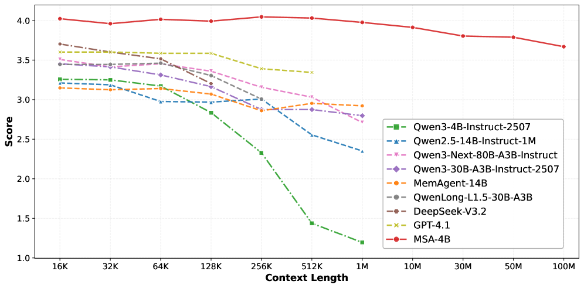
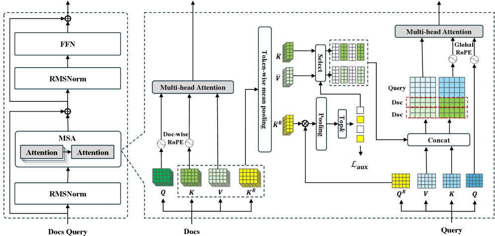
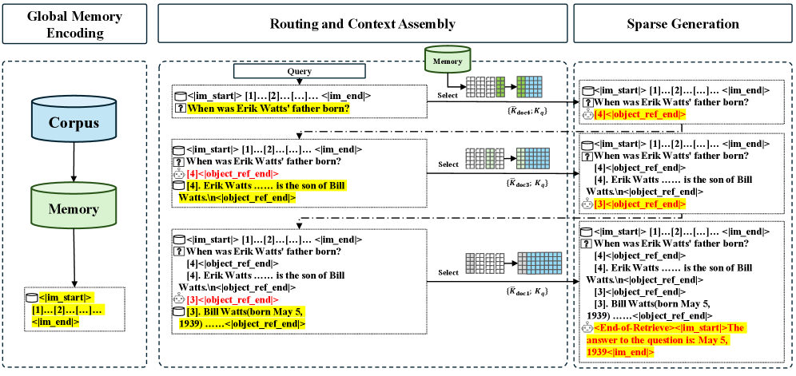
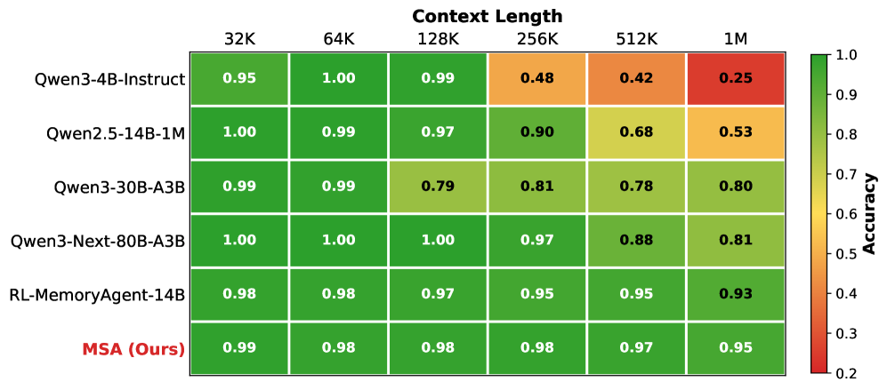

그림 1: MSA의 전체 구조를 보여주는 개념도입니다. 거대 메모리에서 질문과 관련된 부분만 선택적으로 attends하는 방식을 시각화합니다.AI가 긴 글을 잘 읽는다고 말할 때, 우리는 보통 “컨텍스트 윈도우가 커졌다”고 표현합니다. 그런데 이번 논문은 그 한 걸음을 더 밀어붙입니다. MSA(Memory Sparse Attention) 는 단순히 입력 길이를 늘리는 수준이 아니라, 1억 토큰 규모의 메모리를 다룰 수 있는 구조를 제안합니다.
숫자만 보면 감이 잘 안 옵니다. 1억 토큰은 책 수백 권, 기업 문서 아카이브, 혹은 한 사람의 장기 기록에 가까운 규모입니다. 그래서 이 논문은 단순한 모델 개선이 아니라, “AI가 얼마나 긴 시간과 많은 자료를 기억할 수 있는가” 라는 질문에 꽤 본격적으로 답하려는 시도라고 볼 수 있습니다.
오늘은 이 논문을 어렵지 않게 정리해보겠습니다.
한눈에 보는 핵심
- 논문명: MSA: Memory Sparse Attention for Efficient End-to-End Memory Model Scaling to 100M Tokens
- 핵심 주장: 16K에서 100M 토큰 규모로 확장하면서도 성능 저하를 9% 미만으로 억제
- 핵심 아이디어: 필요한 메모리만 골라 보는 sparse attention 구조
- 실무 포인트: RAG를 완전히 대체한다기보다, 매우 긴 문맥과 복잡한 추론이 필요한 영역에서 강력한 선택지가 될 수 있음
- 교육 포인트: “AI는 모든 것을 한 번에 읽는 게 아니라, 필요한 기억을 골라 접근한다”는 개념을 설명하기 좋음
왜 이 논문이 중요한가
지금까지의 대형 언어모델은 컨텍스트 길이가 계속 늘어났습니다.
- 몇 년 전: 4K~8K 토큰
- 그다음: 32K~128K 토큰
- 최근: 수십만~100만 토큰 수준
이 정도만 해도 엄청난 발전이지만, 실제 활용에서는 여전히 부족한 경우가 많습니다.
예를 들면 이런 상황입니다.
- 회사 전체 매뉴얼과 회의록을 모두 참고해야 하는 AI
- 수천 페이지짜리 판례·법률 문서를 읽어야 하는 AI
- 학생의 장기 학습 이력과 피드백을 기억해야 하는 AI 튜터
- 몇 달간 이어지는 프로젝트 맥락을 놓치지 않아야 하는 에이전트
즉, “긴 문서 하나”가 아니라 아주 많은 기억을 장기간 다루는 문제가 중요해지고 있습니다.
기존 방식은 왜 한계가 있었을까
긴 문맥 문제를 해결하려는 접근은 이미 많았습니다. 하지만 다 장단점이 있습니다.
1. RAG(검색 기반 접근)
가장 널리 쓰이는 방법입니다. 필요한 문서를 검색해서 일부만 모델에게 넣어주는 방식이죠.
장점은 효율적이라는 점입니다. 하지만 단점도 분명합니다.
- 검색이 잘못되면 중요한 정보를 놓칠 수 있음
- 검색 시스템과 생성 모델이 분리되어 있음
- 여러 문서를 엮는 복합 추론에서는 한계가 생길 수 있음
2. 긴 컨텍스트를 그대로 늘리는 방식
모델 입력 창 자체를 계속 키우는 방식입니다.
직관적이지만, 모든 토큰이 서로를 보는 attention 구조는 계산 비용이 너무 큽니다. 길이가 커질수록 연산량과 메모리 사용량이 빠르게 폭증합니다.
3. 선형 어텐션·압축 메모리 계열
효율성은 좋지만, 아주 긴 범위로 가면 세부 정보 손실이나 정밀도 저하 문제가 생길 수 있습니다.
그래서 이 논문의 질문은 분명합니다.
정확도를 유지하면서, 정말 큰 메모리를, end-to-end로 학습 가능한 방식으로 다룰 수 없을까?

그림 2: 기존 방식들과 MSA의 구조적 차이를 비교한 다이어그램입니다.MSA는 무엇을 바꿨나
MSA의 핵심은 의외로 직관적입니다.
모든 메모리를 다 보지 말고, 지금 질문에 필요한 메모리만 골라서 보자.
즉, 전체 문서를 무식하게 전부 훑는 것이 아니라, 먼저 관련성이 높은 문서 후보를 추리고, 그다음 그 문서들에 집중해서 attention을 수행합니다.
이 발상 자체는 검색과 비슷해 보일 수 있지만, 논문은 이를 모델 내부 메커니즘으로 더 긴밀하게 통합하려고 합니다.
핵심 기술 1. Top-k Sparse Attention
논문은 문서별로 라우팅 키를 만들고, 질문과의 유사도를 계산한 뒤 상위 k개 문서만 선택합니다.
쉽게 말하면,
- 전체 도서관을 다 읽는 것이 아니라
- 먼저 “지금 질문과 관련 있을 책”을 추린 뒤
- 그 책들만 정밀하게 읽는 방식입니다.
이렇게 하면 계산량을 크게 줄이면서도 필요한 정보에 집중할 수 있습니다.
핵심 기술 2. Document-wise RoPE
긴 문맥을 다룰 때 흔히 생기는 문제 중 하나가 위치 정보 처리입니다. 문서가 너무 길어지면 위치 인코딩이 흔들리거나, 학습 때 보지 못한 길이에서 성능 저하가 커질 수 있습니다.
이 논문은 문서 단위로 위치를 다루는 방식을 제안해, 훈련 시보다 훨씬 긴 길이까지 외삽할 수 있도록 설계합니다.
핵심 기술 3. Memory Interleaving
하나의 질문이 단 한 번의 검색으로 해결되지 않는 경우가 많습니다. 어떤 문제는 여러 단계를 거쳐 기억을 다시 찾고, 다시 읽고, 다시 추론해야 하죠.
MSA는 이런 과정을 위해 검색과 생성의 반복 흐름을 지원합니다. 즉, 한 번 보고 끝나는 것이 아니라, 필요하면 메모리를 다시 참조하는 구조를 지향합니다.

그림 3: Top-k Sparse Attention과 Document-wise RoPE의 작동 원리를 보여주는 기술 다이어그램입니다.논문이 주장하는 성과
가장 눈에 띄는 숫자는 이겁니다.
1. 1억 토큰까지 확장
논문은 16K에서 100M 토큰까지 메모리 규모를 확장하면서도 성능 저하를 9% 미만으로 억제했다고 주장합니다.
이건 단순히 “엄청 길다” 수준이 아니라, 이제 AI가 대규모 장기 기억을 다루는 방향으로 아키텍처가 진화하고 있다는 신호로 볼 수 있습니다.
2. 2×A800 GPU에서 100M 토큰 추론
100M 토큰이면 보통 상상만 해도 하드웨어가 무서울 정도인데, 논문은 2장의 A800 GPU로 추론 가능하다고 설명합니다.
물론 이 말이 “누구나 쉽게 쓸 수 있다”는 뜻은 아닙니다. 여전히 매우 높은 하드웨어 요구사항입니다. 하지만 연구 단계에서 물리적으로 가능한 설계를 보여줬다는 점은 의미가 있습니다.
3. QA 계열 벤치마크에서 강한 성능
연구 노트 기준으로 보면, MSA는 여러 QA 벤치마크에서 강한 결과를 보였고, 특히 multi-hop 추론에서 강점이 드러납니다.
이건 중요합니다. 긴 메모리는 단순히 많이 저장하는 것보다, 멀리 떨어진 정보를 연결해 답을 만드는 능력이 더 중요하기 때문입니다.

그림 4: 16K에서 100M 토큰까지 확장했을 때의 성능 변화를 보여주는 실험 결과 그래프입니다.이 논문을 어떻게 이해하면 좋을까
저는 이 논문을 이렇게 해석하는 게 좋다고 봅니다.
”긴 컨텍스트”에서 “장기 메모리”로 넘어가는 전환점
우리는 그동안 컨텍스트 길이를 주로 “한 번에 얼마나 많이 넣을 수 있나”로 봤습니다. 하지만 앞으로 더 중요한 질문은 아마 이쪽일 겁니다.
- 얼마나 많이 기억할 수 있는가?
- 그중에서 필요한 것을 얼마나 잘 찾는가?
- 여러 기억을 엮어 얼마나 길게 추론할 수 있는가?
MSA는 바로 이 세 질문을 동시에 건드리는 논문입니다.
RAG의 경쟁자라기보다, 다른 축의 해법
이 논문을 보고 “그럼 이제 RAG는 끝났네”라고 해석하면 과합니다. 실제로는 둘의 쓰임이 다를 가능성이 큽니다.
- 실시간으로 문서가 자주 바뀌는 환경: 여전히 RAG가 유리할 수 있음
- 정교한 장기 기억과 다단계 추론이 중요한 환경: MSA류 구조가 더 매력적일 수 있음
즉, RAG와 MSA는 완전한 대체 관계라기보다, 문제 유형에 따라 선택이 달라질 도구로 보는 쪽이 더 현실적입니다.
교육 현장에서 설명하기 좋은 비유
이 논문은 초등학생이나 일반인에게 설명할 때도 꽤 재미있는 비유가 가능합니다.
도서관 비유
- 기존 긴 컨텍스트 모델: 도서관 책을 가능한 많이 책상 위에 펼쳐놓고 읽기
- RAG: 사서가 검색해서 관련 책 몇 권만 가져다주기
- MSA: 사서가 책 전체 구조를 잘 알고 있고, 질문에 따라 정말 볼 가치가 큰 책과 부분만 빠르게 골라 펼쳐주기
이 비유의 좋은 점은, “기억이 크다”는 말이 단순히 저장 공간이 크다는 뜻이 아니라, 필요할 때 잘 접근하고 활용하는 구조라는 점까지 전달할 수 있다는 것입니다.
실무적으로 어디에 쓸 수 있을까
이 논문이 바로 내일부터 서비스에 들어가진 않더라도, 방향성은 분명합니다.
가능성이 큰 분야
- 기업 내부 지식 검색과 장기 업무 기록 관리
- 개인 AI 비서의 장기 메모리
- 장기간 학습 데이터를 반영하는 교육 AI
- 복잡한 기술 문서/의료 기록/법률 문서 분석
- 장기 프로젝트를 이어가는 에이전트 시스템
특히 코난쌤처럼 AI 교육과 실용적 업무 자동화를 함께 보는 관점에서는, 이 논문이 “모델 크기 경쟁”보다 더 중요한 메시지를 줍니다.
앞으로의 AI 경쟁력은 단순히 똑똑함뿐 아니라, 얼마나 잘 기억하고, 그 기억을 얼마나 잘 꺼내 쓰는가로 옮겨갈 수 있다.
한계도 분명히 봐야 한다
좋은 논문일수록 장점만이 아니라 한계도 같이 봐야 합니다.
1. 아직 범용성은 더 검증이 필요함
연구 노트 기준으로 보면, 실험 백본은 Qwen3-4B 계열 중심입니다. 다른 계열 모델에서도 비슷한 효과가 안정적으로 나올지는 더 봐야 합니다.
2. 평가가 특정 태스크에 치우쳤을 수 있음
QA나 Needle-in-a-Haystack 계열 성능은 인상적이지만, 창의적 글쓰기나 일반 대화 같은 영역까지 같은 강점이 이어질지는 아직 불확실합니다.
3. 실제 배포는 여전히 어렵다
2×A800이면 연구·산업 기준으로도 가벼운 환경은 아닙니다. 또한 메모리 병렬화와 오프로드 등 구현 난이도도 높습니다.
즉, 이 논문은 “당장 누구나 쓰는 기술”이라기보다, 앞으로 장기 메모리 AI가 어디로 갈지 보여주는 강한 시그널에 가깝습니다.
코난쌤 관점에서 보면
이 논문은 단순히 연구 성과 하나를 소개하는 데서 끝내기 아깝습니다. 교육적으로도 아주 좋은 소재입니다.
왜냐하면 요즘 사람들은 AI를 볼 때 주로 “정답을 잘 맞히는가”만 보는데, 실제로는 기억 구조가 점점 더 중요해지고 있기 때문입니다.
앞으로 AI 수업이나 콘텐츠에서는 이런 질문을 던져볼 수 있습니다.
- AI는 어디까지 기억할 수 있을까?
- 많이 기억하는 것과 잘 찾는 것 중 무엇이 더 중요할까?
- RAG와 장기 메모리 모델은 어떻게 다를까?
- 미래의 AI 튜터나 AI 비서는 어떤 메모리 구조를 가져야 할까?
이런 질문은 단순 기술 소개를 넘어서, AI 리터러시 교육 주제로도 확장성이 큽니다.
마무리
MSA는 “컨텍스트를 더 길게”라는 흐름을 넘어, “AI에게 장기 메모리를 어떻게 줄 것인가” 라는 더 본질적인 질문으로 넘어가는 논문입니다.
아직은 연구 단계의 성격이 강하고, 실제 제품으로 널리 쓰이기까지는 시간이 필요합니다. 그래도 분명한 건 있습니다.
앞으로의 AI는 단순히 많이 아는 모델이 아니라, 오래 기억하고, 필요한 순간에 잘 꺼내 쓰는 모델 쪽으로 진화하고 있다는 점입니다.
MSA는 그 방향을 꽤 선명하게 보여준 사례라고 할 수 있습니다.
한 줄 정리
MSA는 AI가 모든 문서를 다 읽는 대신, 필요한 기억만 똑똑하게 골라 보게 만들어 1억 토큰 규모의 장기 메모리에 도전한 논문입니다.
함께 보면 좋은 포인트
- 긴 컨텍스트 모델과 RAG의 차이
- 장기 메모리 AI가 에이전트에 미칠 영향
- 교육용 AI 튜터에서 “기억”이 왜 중요한가
참고 자료
- Hugging Face Papers: https://huggingface.co/papers/2603.23516
- arXiv: https://arxiv.org/abs/2603.23516
- arXiv HTML: https://arxiv.org/html/2603.23516